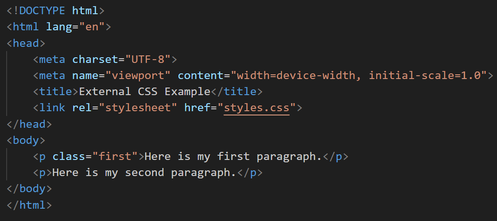
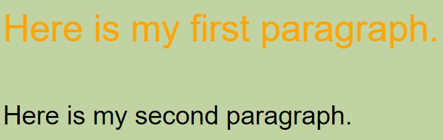

About External CSS
This webpage utilizes only External CSS in order to achieve its current look.
External CSS is a method used to style multiple HTML pages with a single stylesheet.
This approach involves creating a separate CSS file with a .css extension that contains style properties applied to various selectors (such as classes, IDs, headings, etc.).
By using external CSS, you can maintain a consistent design across multiple web pages efficiently.
To link an external CSS file to an HTML document, you need to use the 'link' element within the 'head' section of your HTML file.
The 'link' element should have the rel attribute set to "stylesheet" and the href attribute specifying the path to your CSS file.
By understanding the strengths and limitations of external CSS, you can make informed decisions about when and how to use it effectively in your web projects.
For further learning, consider exploring more detailed CSS tutorials and examples.

Figure 1: Sample HTML Code for External CSS
Figure 2: Sample External CSS File Code
Figure 3: Browser Output for External CSS
Use Cases
- Improved Maintainability – Having styles in a separate file makes it easier to manage and update your styles without modifying each HTML document.
- Enhanced Reusability – The same CSS file can be linked to multiple HTML files, promoting consistent design across your site.
- Efficient Caching – Browsers cache external CSS files, leading to faster page load times on subsequent visits.
Limitations
- Loading Time – Pages may not render correctly until the external CSS file is fully loaded, potentially causing a flash of unstyled content (FOUC).
- Performance Concerns – Linking multiple CSS files can increase download times, affecting overall site performance.
- Versioning and Caching Challenges – Large-scale projects may encounter difficulties in versioning and caching, leading to inconsistencies in styles.
Conclusion and References
Conclusion:
In conclusion, external CSS is an invaluable approach to managing and applying styles across multiple HTML pages efficiently.
By utilizing a separate CSS file, developers can achieve improved maintainability, enhanced reusability, and efficient caching.
These benefits contribute to a cohesive and consistent design across a website, streamlining the styling process.
However, it is essential to acknowledge the limitations, such as potential loading time issues, performance concerns, and challenges related to versioning and caching in large-scale projects.
By understanding these strengths and limitations, developers can make informed decisions about when and how to implement external CSS effectively in their web projects.
For further learning, exploring detailed CSS tutorials and examples is recommended.
References:
GeeksforGeeks. (n.d.). How to Link External CSS to HTML. GeeksforGeeks. Retrieved October 13, 2024, from https://www.geeksforgeeks.org/how-to-link-external-css-to-html/
TutorialsPoint. (n.d.). CSS tutorial. TutorialsPoint. Retrieved October 13, 2024, from https://www.tutorialspoint.com/css/index.htm
W3Schools. (n.d.). CSS how to. W3Schools. Retrieved October 13, 2024, from https://www.w3schools.com/css/css_howto.asp
Name: Zildjian E. California
Student ID: 2024-14086
Email: zcalifornia@up.edu.ph
Phone: +63 9460604514